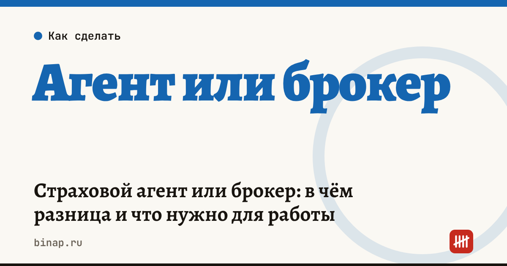

Страховой агент или брокер: в чём разница и что нужно для работы

Страховой агент и страховой брокер оба продают страховки, но работают на разные стороны. Агент действует от имени и по поручению страховой компании, брокер — в интересах клиента, которому подбирает полис у разных страховщиков. Отсюда главное различие для бизнеса: агенту лицензия не нужна, брокеру — нужна лицензия Банка России.
Коротко
- Оба статуса описаны в статье 8 Закона № 4015-1 «Об организации страхового дела».
- Агент работает по агентскому договору со страховщиком и получает от него вознаграждение. Агентом может быть физлицо, ИП или организация.
- Брокер действует в интересах страхователя (или страховщика), получает лицензию Банка России и соблюдает требования к финансовому обеспечению. Физлицо без статуса ИП брокером быть не может.
- Агенту нельзя называть себя брокером, если у него нет лицензии.
- Большинству тех, кто начинает в страховании, подходит статус агента: его можно начать без лицензии и с минимальными расходами.
Сроки, изменения и разборы для ИП и самозанятых — каждое утро в Telegram и MAX. Подпишитесь, чтобы не пропустить.
Сравнение статусов
| Страховой агент | Страховой брокер | |
|---|---|---|
| На кого работает | на страховую компанию | на клиента (страхователя), реже — на страховщика |
| От чьего имени | от имени страховщика | от своего имени или от имени клиента |
| Лицензия ЦБ | не нужна | нужна |
| Кто может быть | физлицо, ИП, организация | организация или ИП (по ст. 8 Закона № 4015-1) |
| Сколько страховщиков | одна или несколько компаний, с каждой — свой договор | любые страховщики на рынке |
| Доход | агентское вознаграждение от страховщика | вознаграждение от клиента или страховщика по договору |
Как понять, что вам подходит
Агент, если вы продаёте полисы одной-трёх страховых компаний, работаете с частными клиентами или малым бизнесом и не хотите получать лицензию. Чтобы начать, достаточно агентского договора. Что в нём проверить — в статье Агентский договор со страховщиком: что проверить.
Брокер, если вы подбираете сложное страхование для компаний (имущество, ответственность, грузы), хотите сравнивать предложения всех страховщиков и готовы к требованиям регулятора: лицензия, финансовое обеспечение, стандарты работы с клиентами и отчётность. Это уже отдельный бизнес с юристом и бухгалтером.
Что нужно для работы агентом
- Агентский договор с каждой страховой компанией: какие виды страхования, ставка вознаграждения, порядок передачи премий и бланков.
- Статус для налогов. Самозанятость, ИП на УСН или патенте — расчёт по вашим цифрам в статье Страховой агент: самозанятый или ИП.
- Учёт клиентов и согласия на обработку персональных данных — имена, телефоны и данные полисов клиентов защищает закон № 152-ФЗ.
- План дохода. Сколько полисов в месяц нужно для цели по доходу, посчитайте в калькуляторе дохода страхового агента. Все материалы — в разделе Страховым агентам.
Частые вопросы
Может ли самозанятый быть страховым брокером? Нет. Брокер получает лицензию Банка России, а получить её может организация или ИП.
Нужна ли агенту лицензия? Нет. Агент работает по договору со страховщиком и действует от его имени; лицензия есть у страховой компании.
Может ли агент работать с несколькими страховыми компаниями? Да, если это не запрещают агентские договоры. С каждой компанией заключают отдельный договор.